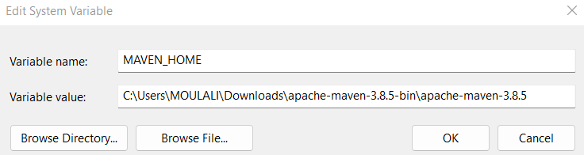
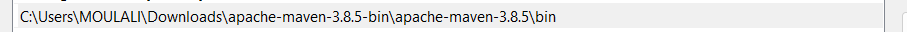
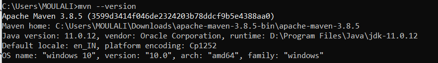
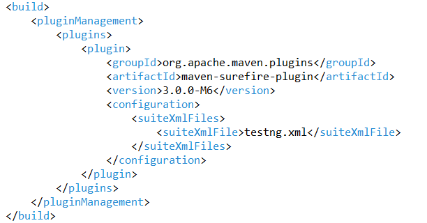
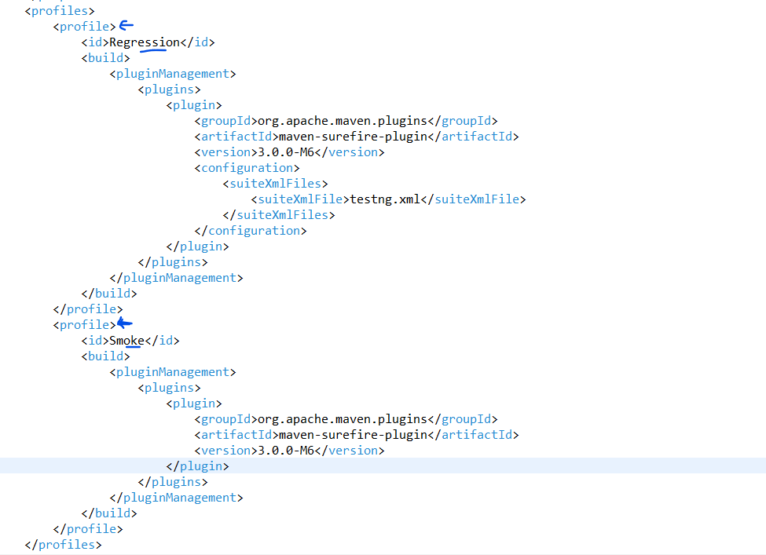

Maven acts as a Central repository to get all dependencies and helps to maintain a common structure
We can easily integrate with CI tools like Jenkins
go to Download link and download apache-maven-version-bin.zip[like apache-maven-3.8.5-bin.zip] file and extract it
copy path upto before bin folder
Now go to Environment variables in your system - System Variables - Click on New
provide as below
Now copy the maven bin folder path and add in path variables
Now go to command prompt and check: mvn --version
If maven is installed successfully and env variables provided are proper , u will see as in below image
Go to Eclipse - Select New - Other - maven project - either u can skip archetype selection or select it as maven-archetype-quickstart
Then provide GroupdId: is like OrganisationName ArtifactId: whatever we provide here will be our project name
Click Finish
We will get a ready made maven project template. pom.xml is the most important file in a maven project because all the depedencies ,with their specific versions are maintained in it
Once we write our testcases , and a important point is inorder to recognise testcases by maven testclass names must end with Test
Once done with testcase scripting , we can go to the command prompt , to project path pom.xml must be at project level>
enter command : mvn clean
we get BUILD Success [if there were previous executions , then it will go and clean previous executions]
enter command : mvn complie
[to check compilation errors/syntax errors]
enter command: mvn test
[if mvn compile is not done , before mvn test then it will compiles and then executes , also checks for all the dependencies to be present in .m2 folder]
Modify the surefire plugin as below
mvn -Dtest=TestCaseName test
In real time we have multiple testng.xml files , like one for Regression , one for Smoke , ... for this we will use profiles inside pom.xml file
to run use : mvn test -Pprofilename , P means profile
example: mvn test -PRegression